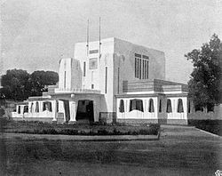
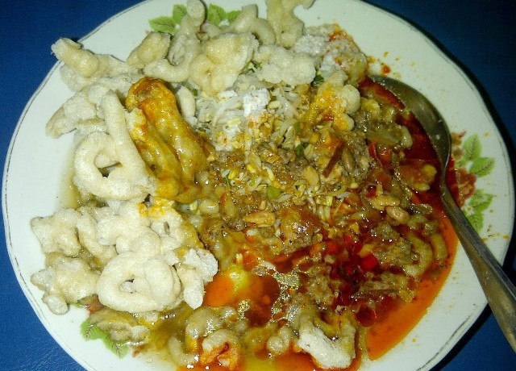
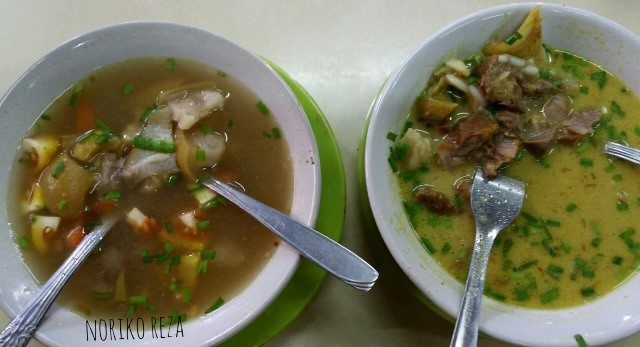
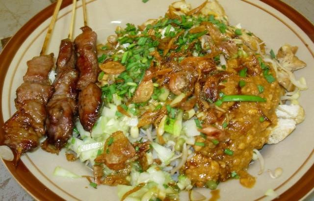
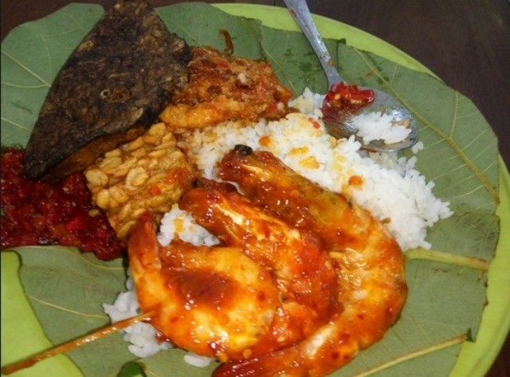

Sejarah

Kota Cirebon, (Carakan:ꦏꦶꦠꦕꦼꦂꦧꦺꦴꦤ꧀, Cirebon: Kita Cerbon) adalah salah satu kota yang berada di Provinsi Jawa Barat, Indonesia. Kota ini berada di pesisir utara Pulau Jawa atau yang dikenal dengan jalur pantura yang menghubungkan Jakarta-Cirebon-Semarang-Surabaya. Jumlah penduduk kota Cirebon ditahun 2018 berjumlah 316.277 jiwa.
Pada awalnya Cirebon berasal dari kata sarumban, Cirebon adalah sebuah dukuh kecil yang dibangun oleh Ki Gedeng Tapa. Lama-kelamaan Cirebon berkembang menjadi sebuah desa yang ramai yang kemudian diberi nama Caruban (carub dalam bahasa Cirebon artinya bersatu padu). Diberi nama demikian karena di sana bercampur para pendatang dari beraneka bangsa di antaranya Sunda, Jawa, Tionghoa, dan unsur-unsur budaya bangsa Arab), agama, bahasa, dan adat istiadat. kemudian pelafalan kata caruban berubah lagi menjadi carbon dan kemudian cerbon.
Selain karena faktor penamaan tempat penyebutan kata cirebon juga dikarenakan sejak awal mata pencaharian sebagian besar masyarakat adalah nelayan, maka berkembanglah pekerjaan menangkap ikan dan rebon (udang kecil) di sepanjang pantai, serta pembuatan terasi, petis dan garam. Dari istilah air bekas pembuatan terasi atau yang dalam bahasa Cirebon disebut (belendrang) yang terbuat dari sisa pengolahan udang rebon inilah berkembang sebutan cai-rebon (bahasa sunda: air rebon), yang kemudian menjadi cirebon.
Menurut Manuskrip Purwaka Caruban Nagari, pada abad 15 di pantai Laut Jawa ada sebuah desa nelayan kecil bernama Muara Jati. Pada waktu itu sudah banyak kapal asing yang datang untuk berniaga dengan penduduk setempat. Pengurus pelabuhan adalah Ki Gedeng Alang-Alang yang ditunjuk oleh penguasa Kerajaan Galuh (Pajajaran). Dan di pelabuhan ini juga terlihat aktivitas Islam semakin berkembang. Ki Gedeng Alang-Alang memindahkan tempat permukiman ke tempat permukiman baru di Lemahwungkuk, 5 km arah selatan mendekati kaki bukit menuju kerajaan Galuh. Sebagai kepala permukiman baru diangkatlah Ki Gedeng Alang-Alang dengan gelar Kuwu Cerbon.
Pada Perkembangan selanjutnya, Pangeran Walangsungsang, putra Prabu Siliwangi ditunjuk sebagai Adipati Cirebon dengan Gelar Cakrabumi. Pangeran inilah yang mendirikan Kerajaan Cirebon, diawali dengan tidak mengirimkan upeti kepada Raja Galuh. Oleh karena itu Raja Galuh mengirimkan utusan ke Cirebon Untuk menanyakan upeti rebon terasi ke Adipati Cirebon, namun ternyata Adipati Cirebon berhasil meyakinkan para utusan atas kemerdekaan wilayah cirebon.
Dengan demikian berdirilah daerah otonomi baru di Cirebon dengan Pangeran yang menjabat sebagai adipati dengan gelar Cakrabuana. Berdirinya daerah Cirebon menandai diawalinya Kerajaan Islam Cirebon dengan pelabuhan Muara Jati yang aktivitasnya berkembang sampai kawasan Asia Tenggara.[13]
Kemudian pada tanggal 7 Januari 1681 Cirebon secara politik dan ekonomi berada dalam pengawasan pihak VOC, setelah penguasa Cirebon waktu itu menandatangani perjanjian dengan VOC.[14]
Pada tahun 1858, di Cirebon terdapat 5 toko eceran dua perusahaan dagang. Pada tahun 1865, tercatat ekspor gula sejumlah 200.000 pikulan (kuintal), dan pada tahun 1868 ada tiga perusahaan Batavia yang bergerak di bidang perdagangan gula membuka cabang di Cirebon. Pada tahun 1877 Cirebon sudah memiliki pabrik es. Pipa air minum yang menghubungkan sumur-sumur artesis dengan perumahan dibangun pada tahun 1877[15].
Pada masa kolonial pemerintah Hindia Belanda, tahun 1906 Cirebon disahkan menjadi Gemeente Cheribon dengan luas 1.100 ha dan berpenduduk 20.000 jiwa (Stlb. 1906 No. 122 dan Stlb. 1926 No. 370). Kemudian pada tahun 1942, Kota Cirebon diperluas menjadi 2.450 ha dan tahun 1957 status pemerintahannya menjadi Kotapraja dengan luas 3.300 ha, setelah ditetapkan menjadi Kotamadya tahun 1965 luas wilayahnya menjadi 3.600 ha.
Geografis

Tari topeng Cirebon adalah salah satu tarian di wilayah kesultanan Cirebon. Tari Topeng Cirebon, kesenian ini merupakan kesenian asli daerah Cirebon, termasuk Subang, Indramayu, Jatibarang, Majalengka, Losari, dan Brebes. Disebut tari topeng karena penarinya menggunakan topeng di saat menari. Pada pementasan tari Topeng Cirebon, penarinya disebut sebagai dalang, dikarenakan mereka memainkan karakter topeng-topeng tersebut.
Tari topeng ini sendiri banyak sekali ragamnya dan mengalami perkembangan dalam hal gerakan, maupun cerita yang ingin disampaikan. Terkadang tari topeng dimainkan oleh satu penari tarian solo, atau bisa juga dimainkan oleh beberapa orang.
Thomas Stamford Raffles dalam bukunya The History of Java mendeskripsikan bahwa kesenian topeng Cirebon merupakan penjabaran dari cerita Panji dimana dalam satu kelompok kesenian topeng terdiri dari dalang (yang menarasikan kisahnya) dan enam orang pemuda yang mementaskannya diiringi oleh empat orang musisi gamelan (bahasa Cirebon: Wiyaga)
Makanan Khas
Kota Cirebon, sebuah kota di jawa barat yang terkenal dengan udangnya, ternyata juga memiliki hal lain yang juga bisa menarik wisatawan.
Apa itu? Adalah wisata kulinernya.
Di Kota Cirebon, ada banyak makanan khas yang sangat menggugah selera bagi mereka pemburu kuliner lokal.
Docang

Docang memang terdengar mirip dengan makanan khas kota Bogor yang bernama Doclang. Tak hanya itu, bahan utama yang digunakan juga mirip – seperti adanya lontong. Tapi, Docang dan Doclang memiliki perbedaan di bumbu dan jenis penyajiannya.
Untuk Doclang sendiri, kuliner tersebut disiram saus kacang untuk penyajiannya. Berbeda dengan Docang yang dibumbui dengan sayur oncom yang dikombinasikan dengan bungkil kacang tanah serta tambahan parutan kelapa.
Isi dari Docang umumnya terdiri dari lontong, daun singkung, tauge, parutan kelapa dan juga kerupuk diatasnya. Penasaran dengan bagaimana rasanya? Anda bisa membuktikan sendiri saat mampir di Cirebon. Bukan bermaksud memberi spoiler, rasa kuah Docang sangat gurih dan segar. Harga untuk kuliner khas Cirebon ini sekitar Rp. 10.000 sampai Rp. 15.000 per porsi.
Empal Gentong

Empal Gentong juga menjadi salah satu dari sekian makanan khas dari Cirebon. Penyajian kuliner ini menggunakan sebuah kuali yang berasal dari bahan tanah liat. Seperti namanya, Empal Gentong dibuat dari daging sapi yang dimasak hingga memberikan daging yang bertekstur lembut sehingga memudahkan kita untuk mengkonsumsinya.
Hal ini dikarenakan oleh waktu yang dibutuhkan untuk memasak empal cukup lama, yakni sekitar 5 jam. Dipadukan dengan kuah yang gurih dan sedap, pastinya Anda tidak akan kecewa saat mencoba Empal Gentong. Sajian kuliner ini biasanya ditambah dengan jeroan seperti paru, babat, limpa, dan usus. Harga dari kuliner ini sekitar Rp. 17.000 hingga Rp. 25.000 untuk satu porsi.
Nasi Lengko

Di Cirebon sendiri, selain Nasi Jamblang, juga ada satu jenis olahan kuliner yang disebut dengan Nasi Lengko. Berbeda dengan Nasi Jamblang, kuliner yang satu ini bisa dibilang lebih menyehatkan.
Kenapa? Karena lebih menggunakan beragam sayuran. Selain itu, adanya guyuran sambal kacang membuat citarasa Nasi Lengko menjadi beragam, tak terkecuali rasa gurih. Jika Anda berpikir tentang pecel, bisa dibilang Nasi Lengko adalah pecelnya orang Cirebon.
Nasi Jamblang

Kuliner yang satu ini adalah kuliner yang menjadi ciri khas dari Kota Cirebon. Bagi Anda yang mampir di kota ini, kami menyarankan Anda untuk berburu Nasi Jamblang. Kenapa? Karena jenis kuliner ini benar-benar asli dari Cirebon.
Salah satu yang membuat Nasi Jamblang sangat unik dan mudah dikenali adalah bungkus nasinya yang berasal dari daun jati. Berbeda dengan nasi khas daerah lain yang seringkali menggunakan daun pisang. Awal mula Nasi Jamblang menjadi terkenal adalah cita rasa yang khas dan harganya sangat sangat terjangkau.
Nasi Jamblang lahir tepatnya di suatu desa yang bernama Desa Jampang, Cirebon. Untuk lauk yang disuguhkan, banyak sekali ragam lauk yang bisa kita pilih. Seperti sate kentang, udang, ikan asin, ayam goreng, pepes, perkedel, bacem, dll. Jika Anda ingin lauk yang paling populer, Anda bisa memilih cumi-cumi yang ditumis atau paru goreng. Harga dari makanan khas dari Cirebon ini mulai dari Rp. 2.000 sampai Rp. 20.000.